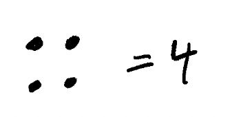
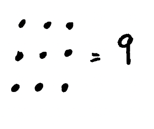
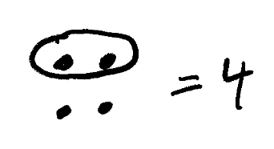
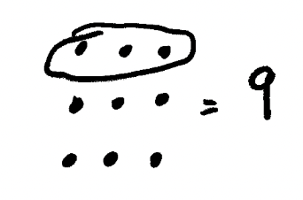

Some Libraries¶
Some Libraries
math
random
Some libraries¶
Up until now we’ve been looking at the core of Python. In some very specific instances we made use of libraries, but didn’t really explain what they were, or why we could do such things. In general the power of Python comes from a couple of places:
The core of the language provides structure for how code should look, but it doesn’t provide that much functionality
The standard libraries provide significantly more functionality and power
External third party libraries developed by businesses and the open source community provide a truly awesome amount of functionality
Today we’ll be looking at some of the standard libraries in Python. These don’t require any extra installation and should work the same in this notebook as they do in your local machine.
One thing to note though - it’s important that you are using Python 3.6+. If you are using an older version of Python on your machine, there is no guarantee that things will work the same way. For this course, it’s expected that you are using a ‘current’ Python version. So if you don’t have one, you can download it for free from: python.org
First let’s look at how to use a library. For this, we’ll need to learn about import statements.
An import statement, or colloquially, just an import, is how you bring libraries into your program. In addition to bringing a whole library into your program, you can bring in just a part of a library or just a single function or piece of data into scope. Some libraries are very big so it’s best to import what you need. In other cases, importing the library won’t work and you’ll need import specific subsections of the library.
Let’s start with a simple but very useful library - math.
import math
print(math)
<module 'math' from '/Library/Frameworks/Python.framework/Versions/3.9/lib/python3.9/lib-dynload/math.cpython-39-darwin.so'>
As you can see, we’ve ‘imported’ the math library. To do this, we simply say import and then the name of the library, like so:
import [NAME OF SOME LIBRARY]
This is the simplest possible import statement. There are plenty of variants of import statements. For instance, if we just want access to all the functions in the math library we can do:
from math import *
The from [LIBRARY] import * is generally frowned upon as it’s not obvious which functions we are importing. So typically people will explicitly write all the functions we want from a given library.
In order to figure this out, we’ll need to introduce something new - the dir function. This comes builtin to Python and is generally super useful. The dir function shows us all the functions associated with a library, amongst other things:
dir(math)
['__doc__',
'__file__',
'__loader__',
'__name__',
'__package__',
'__spec__',
'acos',
'acosh',
'asin',
'asinh',
'atan',
'atan2',
'atanh',
'ceil',
'comb',
'copysign',
'cos',
'cosh',
'degrees',
'dist',
'e',
'erf',
'erfc',
'exp',
'expm1',
'fabs',
'factorial',
'floor',
'fmod',
'frexp',
'fsum',
'gamma',
'gcd',
'hypot',
'inf',
'isclose',
'isfinite',
'isinf',
'isnan',
'isqrt',
'lcm',
'ldexp',
'lgamma',
'log',
'log10',
'log1p',
'log2',
'modf',
'nan',
'nextafter',
'perm',
'pi',
'pow',
'prod',
'radians',
'remainder',
'sin',
'sinh',
'sqrt',
'tan',
'tanh',
'tau',
'trunc',
'ulp']
Don’t worry about the things with the __ for now. They’ll be important in later chapters though! Anyway, so now we can import specific functions from the library with an from [LIBRARY] import function statement:
from math import sqrt
This imports sqrt which is the square root function, which is, as we know, very useful for lots of formulas. If you aren’t sure what a given function does, you can always look at the documentation.
In Python this is done with the help function:
help(sqrt)
Help on built-in function sqrt in module math:
sqrt(x, /)
Return the square root of x.
Any good function will come with documentation, and all of the functions in the standard libraries in Python come with pretty good documentation, or docs for short.
Now that we’ve seen what this does, let’s go through an example using it:
sqrt(4)
2.0
The above should look pretty familiar - if it doesn’t, the sqrt function takes the root of a square. You see, you can actually represent numbers as something called a number shape. This is how Pythagoras thought about numbers:

As you can see, the number 4 is a perfect square. That’s because when we stack the dots together we end up with a square - each row has the same number of dots, and the number of dots in a row is equal to the number of rows.
Let’s look at another example:

Okay - so how do we get the square root, or said another way, the root of the square? Well, we just isolate a row and count the number of dots - that’s the ‘root’ of the square!

For completeness, let’s look at the square root picture for 9:

The sqrt function in Python does the same thing as we just did above - it finds the ‘root’ of the square. We can also also figure out the square root for numbers that don’t have integer square roots - but we can’t represent this graphically in a simple way with number shapes. So we’ll just show some examples:
sqrt(27)
5.196152422706632
sqrt(54)
7.3484692283495345
Not sure if you noticed - but in the list of math functions there was something called pi - this isn’t a function. This is Python attempting to represent the number pi as a float. Ofcourse, we can never actually do it because pi is irrational, and therefore is infinitely big, so computers can’t represent it with infinite precision. But we can get a useful subset of pi and use it for some mathematical calculations:
from math import pi
print(pi, sqrt(pi))
3.141592653589793 1.7724538509055159
As you can see, we can see sqrt of pi! But I digress. There are a bunch more functions in math, like the trigonometric functions:
acos
acosh
asin
asinh
atan
atan2
atanh
cos
cosh
sin
sinh
tan
tanh
Which we won’t go over here, but you should generally be aware of!
Next we are going to look at the random library:
Generally speaking random let’s us generate random values. This is going to be of huge importance for later chapters, so please play around with this library a lot!
All of the standard libraries come with online documentation. Here are the docs for random
Let’s dive in within some functions in random:
from random import randint
help(randint)
Help on method randint in module random:
randint(a, b) method of random.Random instance
Return random integer in range [a, b], including both end points.
As we can see from the docs, randint let’s us set a lower bound and an upper bound for the random integers that we generate:
randint(0, 10)
9
You should try running the above cell a bunch of times to see how the numbers change.
Next I want to talk about something a little more high level:
using . (dot) notation. With dot notation, we reference the function of a library from the namespace of the library. That is the name of the library, followed by a dot, followed by the function:
import random
random.randint(0, 10)
9
The above code is the same as in the previous code cell, but the difference is, now we don’t need to explicitly import each function, we can just call any of the functions from the library! This isn’t always preferred and it honestly really depends. Some of this is a matter of choice, some of this is a matter of convention. But it all depends on how you want to call your functions.
Another piece of syntax associated with imports - as
In addition to being able to import a library, you can also give it a different name than the name of the library:
import random as ran
import random
random is ran
True
As you can see, the choice of giving the library a different name with import [LIBRARY NAME] as [DIFFERENT NAME] doesn’t change any of it’s functionality. And may be a useful convention in certain cases. The popular third party library - pandas - which we will use heavily later in this course often has an abbreviated name:
import pandas as pd
You’ll see this textbook use the above convention, basically always. So best to get used to it now. This is the convention followed wide and large in industry as well as open source projects, as well as the personal and professional projects of both the authors of this text.